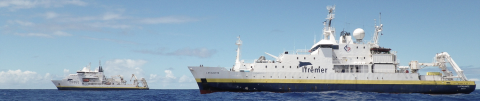

Services Hydrographiques
Remarque :
Fabriquer des cartes exactes, fiables et maintenues à jour nécessite de pouvoir relever en mer et à terre les informations nécessaires.
L'acquisition et l'édition papier et électronique des informations concernant la navigation et l'environnement maritime côtier et océanique nécessite des moyens techniques et maritimes importants.
Le SHOM
En France, c'est le Service Hydrographique et Océanographique de la Marine (SHOM) qui assure cette mission. C'est un organisme public.
L'établissement principal du SHOM est à Brest.

Il est chargé de réaliser :
Autres organismes
Chaque pays développé a une agence chargé de recueillir et de produire des cartes et documents nautiques.
Un organisme international coordonne l'activité de chaque pays :